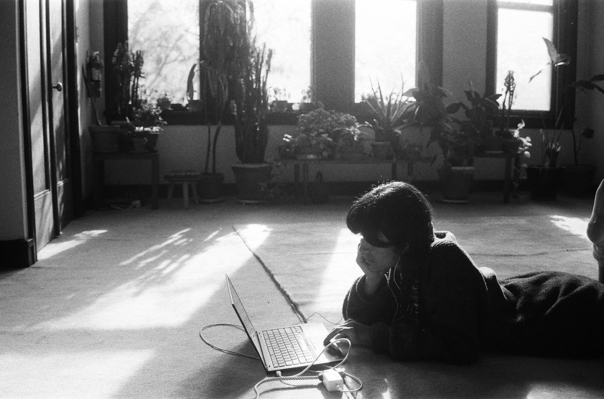
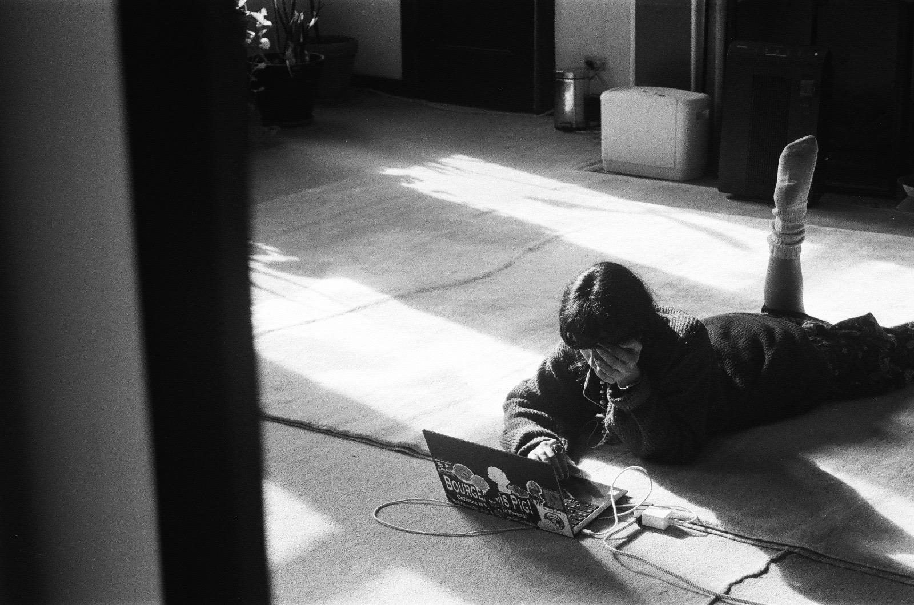
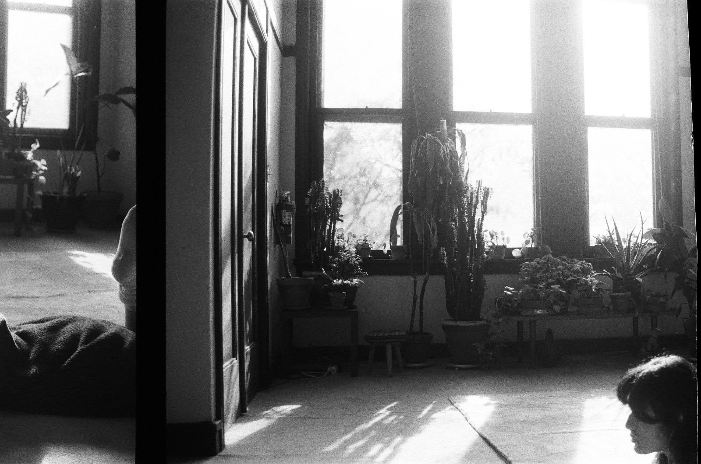
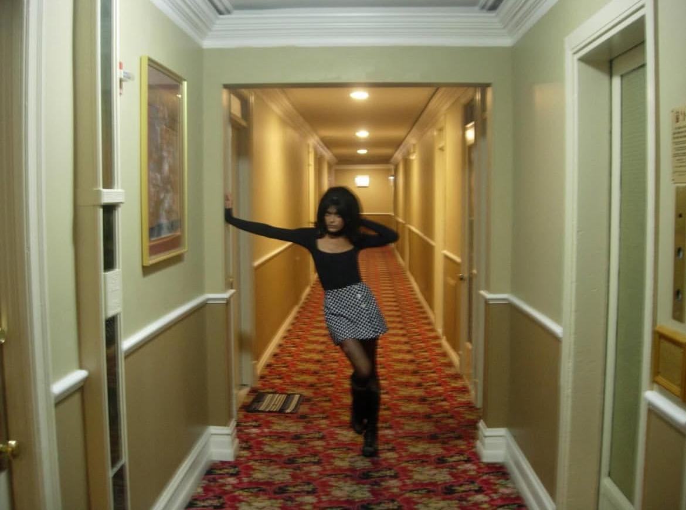

Shy Tandon is a Chicago-based writer working towards publishing speculative literary fiction and creative nonfiction. Her work examines the interplay between nature and technology, the relationship between beauty and degradation, and the spaces between light and darkness. She works across genres and forms, including fiction, essays, film, and photography. Writing, and all processes of creation are ways for her to explore what it means to be human, and to engage with transformation as a constant condition of experience.
For inquiries regarding publication, collaboration, or use of this work, please contact shy@shytandon.com.
